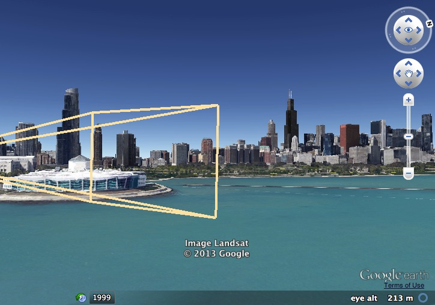
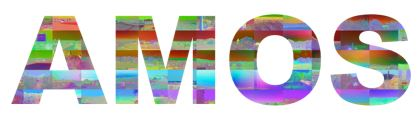
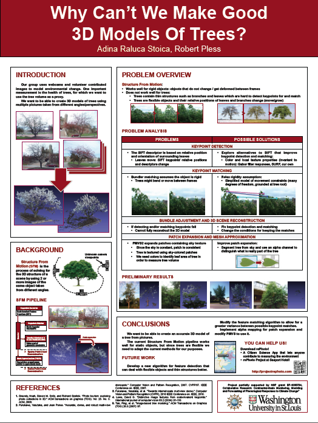

Research > Washington University
Computer Vision Lab, 2011-2014
Between August 2011 and May 2014, I was a graduate student in the Computer Vision Lab, where I worked on various projects. Some highlights are presented here.
Project Live3D

Project Live3D is a web-based application that allows users to update the textures in Google Earth to show what the world looks like at this very moment as well as where the webcam taking the image is positioned. Users match points between a 2D image and a 3D Google Earth model. The program then calibrates the image, calculates the camera location and viewport and then uses the image texture as an overlay for the Google model.
In this project, I worked on improving the Live3D interface and on making it usable for the
View From Your Window contest.
The Archive of Many Outdoor Scenes (AMOS)

AMOS is a collection of long-term timelapse imagery from publicly accessible outdoor webcams around the world. Using this dataset, the research community works on research in camera geolocation, camera calibration, camera registration to GIS data, and the automatic annotation of events and objects in a scene.
For this project, I performed mainly maintenance work, with occasional development and redesign.
3D Models of Trees
Structure From Motion (SFM) is the process of solving for the 3D structure of a scene by using 2 or more images of the same object taken from different angles.
Structure From Motion works well for rigid objects (that do not change / get deformed between pictures), but does not work well for trees, because trees contain thin structures such as branches and leaves which are hard to detect keypoints for and match, as well as because trees are flexible objects and their relative positions of leaves and branches change (move/grow).
I presented the
poster below at the CRA-W Graduate Cohort Workshop in April 2013.
